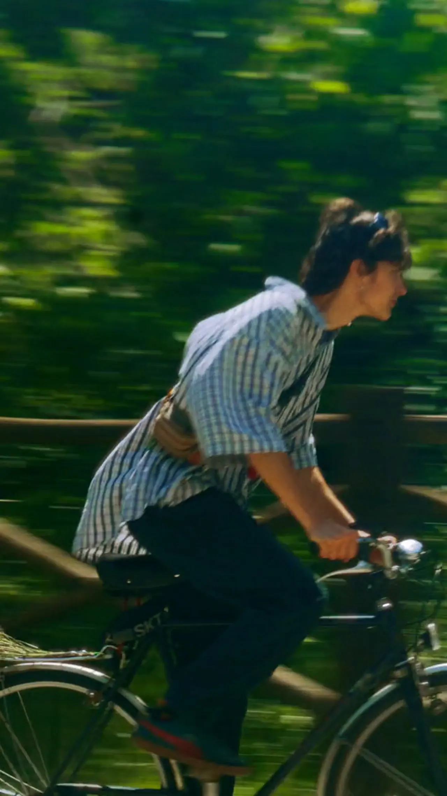
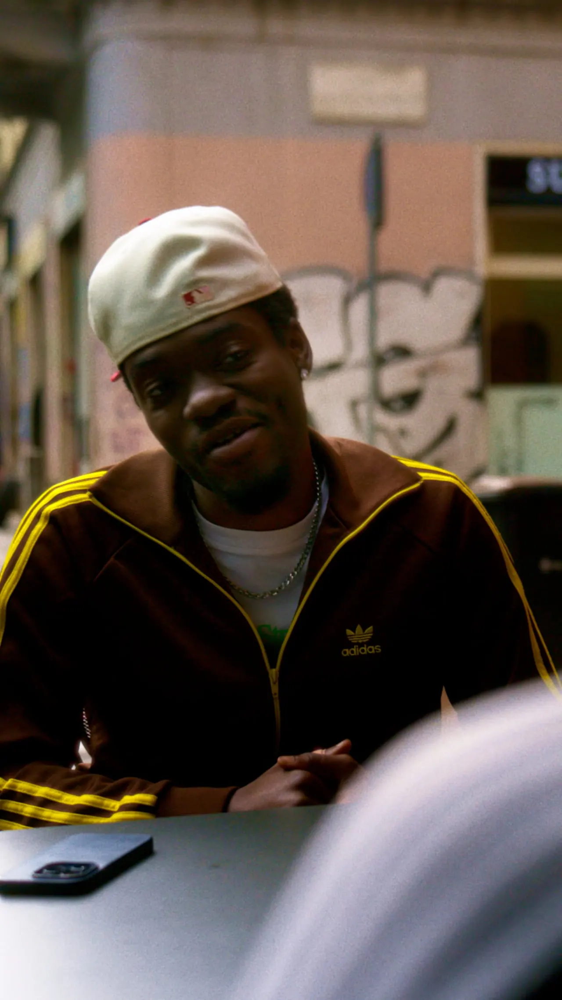
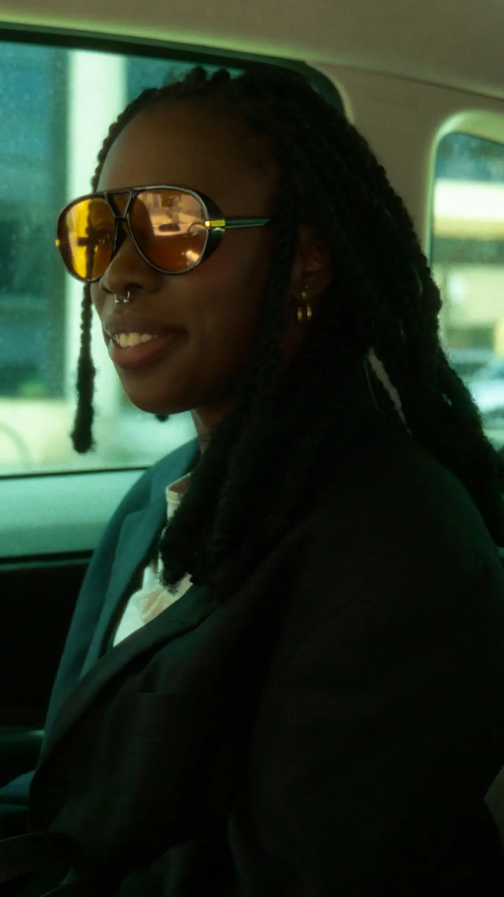

← All work Looperfest '27 ADV Campaign RoleDirector of Photography FormatVertical 9:16  [ Play ] 00:23 Looperfest '27 | Teen  [ Play ] 00:33 Looperfest '27 | Student  [ Play ] 00:28 Looperfest '27 | Adult Credits Directed by Lukas UrbsysCinematography by Lorenzo Mangini ← PreviousGolden Notes, con Giovanni Falzone Next →Subvoce